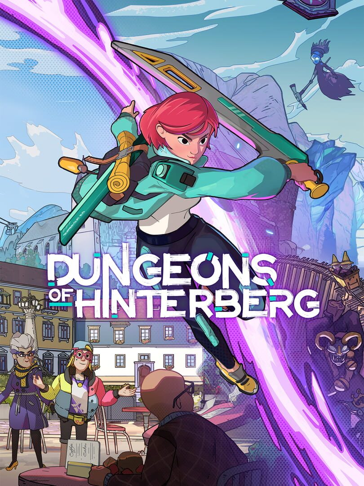

Dungeons of Hinterberg
Dungeons of Hinterberg
Details
|  | |
| Playtime | Not Played |
| Last Activity | Never |
| Added | 26/06/2025 0:04:03 |
| Modified | 26/06/2025 0:05:37 |
| Completion Status | Not Played |
| Library | Steam |
| Source | Steam |
| Platform | |
| Release Date | 18/07/2024 |
| Community Score | 70 |
| Critic Score | 83 |
| User Score | |
| Genre | Adventure Hack and slash/Beat 'em up Indie Role-playing (RPG) |
| Developer | Microbird |
| Publisher | Curve Games |
| Feature | Single Player |
| Links | Official Twitch Steam Epic Discord Wikipedia Uknown Uknown YouTube |
| Tag | |
Description
Welcome to Hinterberg, a new tourist hotspot in the idyllic Austrian Alps! As Luisa, you escape from the treadmill of corporate life to go on a dungeon exploring vacation. However, you soon discover that not everything is as it seems. Will you restore peace to this once-serene alpine paradise, or be sent straight back to your humdrum life back home?

Every inch of Hinterberg has been crafted with a captivating art style you’ll want to savour. Whether you’re snowboarding down a glacier, climbing mountains, or taking in the lakeside scenery, there’s so much available to explore!


Hinterberg’s dungeons are packed full of playful puzzles designed to surprise and challenge you. Get your thinking cap on and use every spell at your disposal to tackle each dungeon’s unique puzzling twist!


Monsters lurk around every corner in Hinterberg, and your sword and magic skills are essential for keeping them at bay. Harness the wind, conjure a hoverboard out of thin air, or freeze your enemies in a jelly block!


Explore the world or conquer dungeons by day, then spend your evenings forging friendships with the locals and other adventurers in town. Some will help you get stronger, while others are here strictly for the excitement and the selfies!


Stop by Olivia’s Store in town and browse through a collection of stylish outfits! Once you’re decked out in your finest, simply fire up Photo Mode where you can apply filters, poses and overlays to capture a lasting memory of your very own Luisa.


Play through the game from the very beginning while keeping your last playthrough’s inventory, stats, and the majority of your relationship perks. Whether you choose to maintain old friendships or reset their progress, how you turn back the clock is up to you.